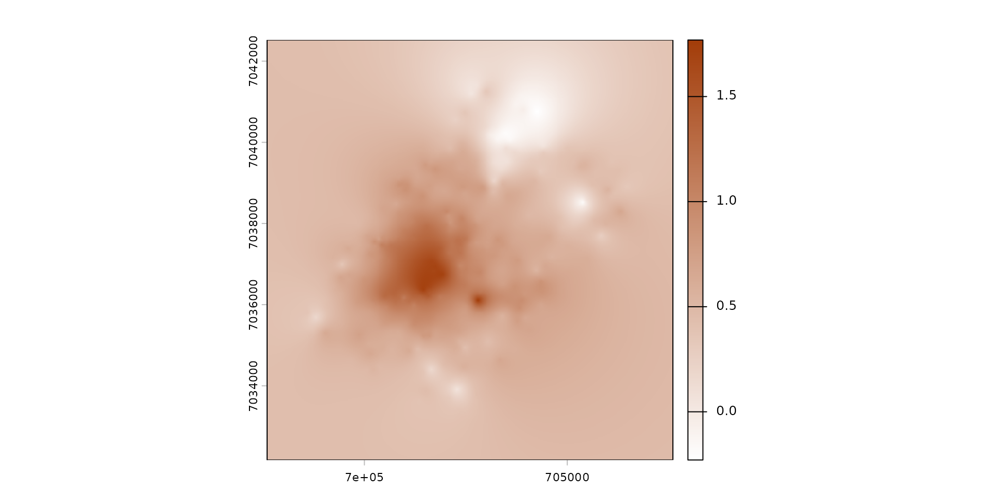
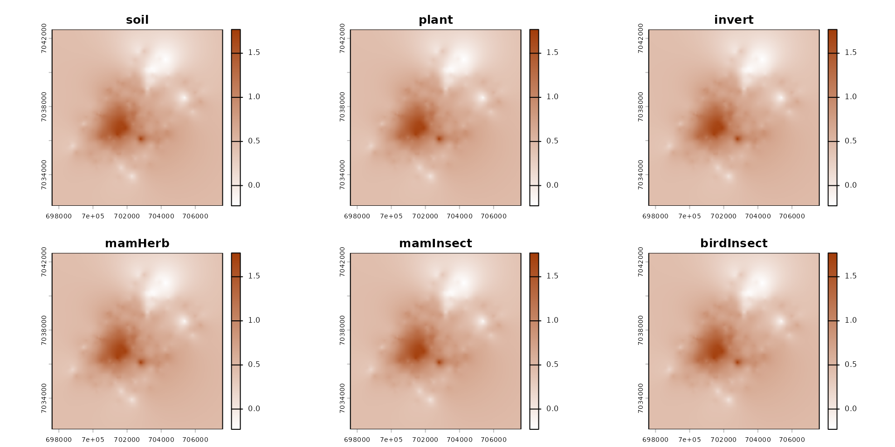
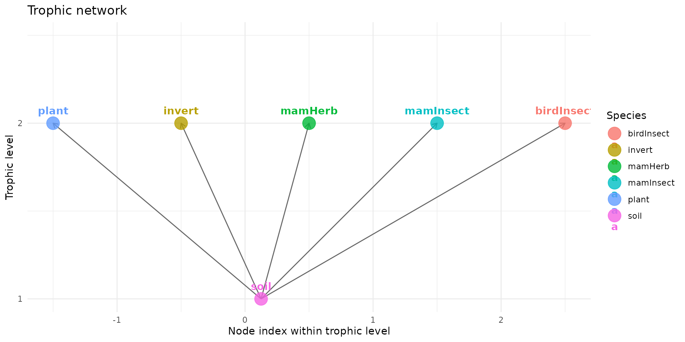
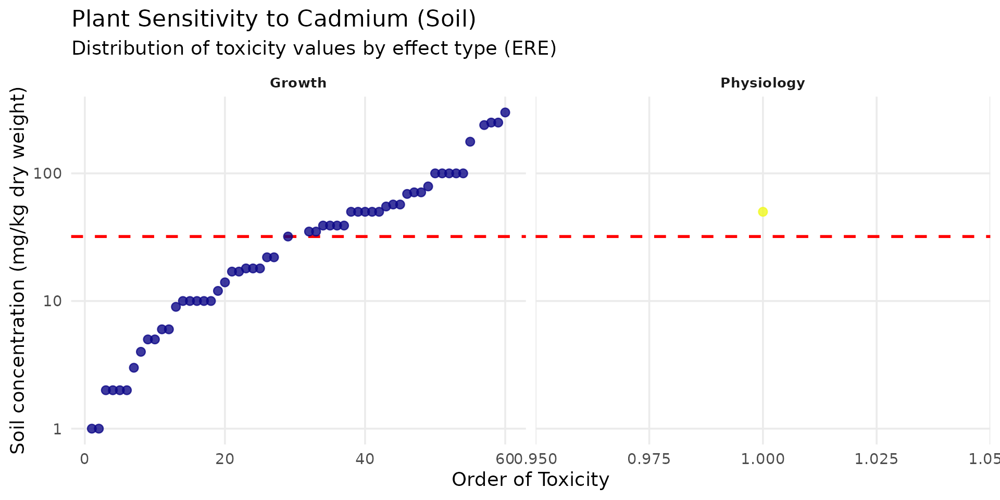
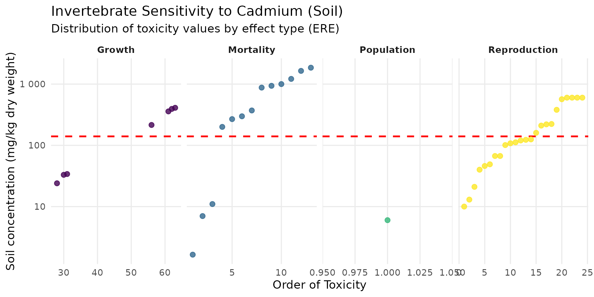
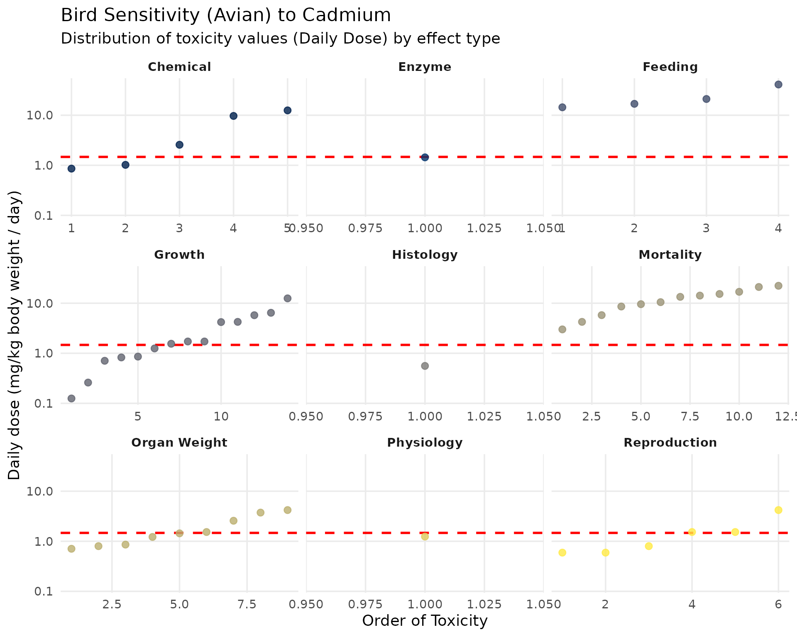
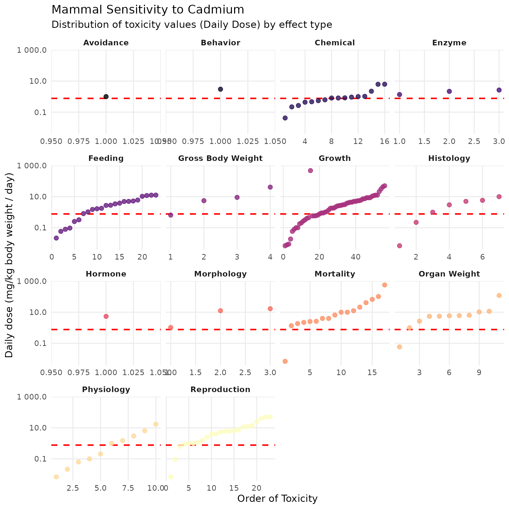
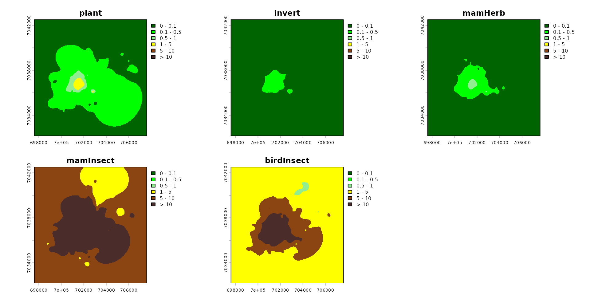
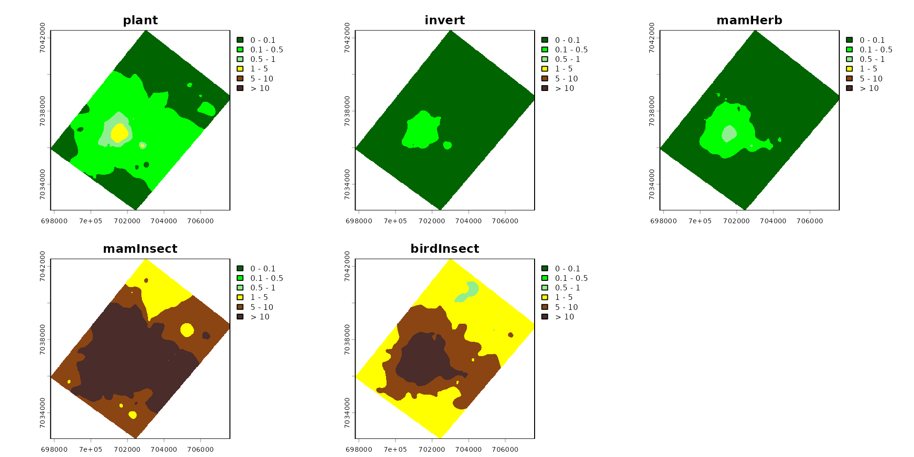

Implementing Eco-SSL model
zoo_ecossl.RmdThe fundamental principle of this assessment is based on the calculation of the Hazard Quotient (HQ).
The goal of the algorithm is to find the exact concentration of the contaminant in the soil (Soil) for which the HQ is strictly equal to 1 (the tipping point where the risk begins). The risk equation used to model this relationship is as follows:
By setting , it is possible to rearrange the equation to isolate the Soil variable. The Soil value thus obtained becomes our safety threshold: the Eco-SSL.
Exposure Parameters
The numerator of our equation models the animal’s environmental exposure. It is based on the following ecological and physiological parameters:
- Food Ingestion Rate (): The dietary ingestion rate. It is the total amount of food the animal consumes per day, normalized to its own body weight. (Example: a herbivorous bird consumes 0.190 kg of dry matter for each kg of its own body weight).
- Soil Ingestion as Proportion of Diet (): The proportion of soil that the animal swallows accidentally or unintentionally while feeding. (Example: 13.9% or 0.139 for the herbivorous bird).
- Concentration of Cadmium in Biota Type (): This is the core of trophic transfer. It refers to the concentration of the contaminant in the animal’s food items (plants, earthworms, prey). Because this concentration directly depends on the soil’s pollution state, it is modeled using specific regression equations. (Example: for plants eaten by a herbivore, the transfer equation is ).
Build a spacemodel to get Eco-SSL risk layer
First step is load the package spacemodR.
You can install from CRAN or from the github repository
library(spacemodR)
# additional libraries for this specific notebook
library(dplyr)
#>
#> Attaching package: 'dplyr'
#> The following objects are masked from 'package:stats':
#>
#> filter, lag
#> The following objects are masked from 'package:base':
#>
#> intersect, setdiff, setequal, union
library(ggplot2)
library(scales)Habitat
The first step is to build a raster stack with the ground as raster.
# the raster tif file is internal to the spacemodR package
ground_cd <- load_raster_extdata("ground_concentration_cd_compressed.tif")
color_contam <- colorRampPalette(c("white", "#A33D0A"))(255)
terra::plot(ground_cd, col=color_contam)
names_hab = c("soil", "plant", "invert", "mamHerb", "mamInsect", "birdInsect")
list_habitat <- lapply(names_hab, function(i) ground_cd)
stack_habitat <- raster_stack(list_habitat, names_hab)
terra::plot(stack_habitat, col=color_contam)
Food Web
The second step is to build the trophic web, all species connecting directly to the soil.
trophic_df <- trophic() |>
add_link("soil", "plant") |>
add_link("soil", "invert") |>
add_link("soil", "mamHerb") |>
add_link("soil", "mamInsect") |>
add_link("soil", "birdInsect")You can have access to trophic level:
attr(trophic_df, "level")
#> soil plant invert mamHerb mamInsect birdInsect
#> 1 2 2 2 2 2And then plot it:
plot(trophic_df)
Merge Habitat and Food Web
The third step is to merge the raster stack with the trophic data.frame.
spcmdl_ecossl_h <- spacemodel(stack_habitat, trophic_df)No dispersal in Eco-SSL
There is no dispersal in Eco-SSL, so all kernels are set to
NA.
We set this list of kernel which is requirement later for transfer function.
# no dispersal for eco_ssl
ecossl_kernels <- list(
soil = NA, plant = NA, invert = NA,
mamHerb = NA, mamInsect = NA, birdInsect = NA)Computing the Risk
The computing of Risk Threshold using data for Species Sensitivity Distribution compiled by the US-EPA is findable in this dataset:
data("SSD_ecoSSL_all")For plants and soil invertebrates
For plants and soil invertebrates, the toxicological value is not a daily ingested dose. It directly refers to the concentration in the soil (expressed in mg/kg of soil dry weight). These organisms live in the soil and are continuously exposed to it.
For plant, the Eco-SSL is the geometric mean of the maximum acceptable toxicant concentration (MATC) values for fourteen test species under different test conditions (pH and % organic matter (OM)) and is equal to 32 mg/kg dw.
# Data preparation (remove NAs to avoid warnings)
ssd_cd_plant <- SSD_ecoSSL_all |>
dplyr::filter(
compound == "Cadmium",
species_group == "Plant",
!is.na(tox_value)
)
# Create the plot
ggplot(data = ssd_cd_plant, aes(x = order_tox_value, y = tox_value, color = ERE_full)) +
theme_minimal(base_size = 14) +
geom_hline(yintercept = 32, linetype = "dashed", color = "red", linewidth = 1) +
geom_point(size = 2.5, alpha = 0.8) +
facet_wrap(~ ERE_full, scales = "free_x") +
scale_y_log10(labels = label_number()) +
scale_color_viridis_d(option = "plasma", guide = "none") +
labs(
title = "Plant Sensitivity to Cadmium (Soil)",
subtitle = "Distribution of toxicity values by effect type (ERE)",
x = "Order of Toxicity",
y = "Soil concentration (mg/kg dry weight)"
) +
theme(
panel.grid.minor = element_blank(),
strip.text = element_text(face = "bold", size = 10)
)
For invertebrates, the Eco-SSL is the geometric mean of the MATC or (concentration causing an effect on 10% of the population) values for three test species under six different test conditions (pH) and is equal 140 mg/kg dw. For Cadmium, the Eco-SSL is 32 mg/kg for plants
ssd_cd_invert <- SSD_ecoSSL_all |>
dplyr::filter(
compound == "Cadmium",
grepl("Invert", species_group), # Flexible filter for Invertebrates
!is.na(tox_value)
)
ggplot(data = ssd_cd_invert, aes(x = order_tox_value, y = tox_value, color = ERE_full)) +
theme_minimal(base_size = 14) +
geom_hline(yintercept = 140, linetype = "dashed", color = "red", linewidth = 1) +
geom_point(size = 2.5, alpha = 0.8) +
facet_wrap(~ ERE_full, scales = "free_x", ncol=4) +
scale_y_log10(labels = label_number()) +
scale_color_viridis_d(option = "viridis", guide = "none") +
labs(
title = "Invertebrate Sensitivity to Cadmium (Soil)",
subtitle = "Distribution of toxicity values by effect type (ERE)",
x = "Order of Toxicity",
y = "Soil concentration (mg/kg dry weight)"
) +
theme(panel.grid.minor = element_blank(), strip.text = element_text(face = "bold"))
For birds (Avian) and mammals (Mammalian)
The process involves two steps. First, a TRV (Toxicity Reference Value) is calculated. This TRV represents the safe daily ingested dose, expressed in milligrams of contaminant per kilogram of the animal’s body weight per day (mg/kg bw/day). This is the one we are going to use here.
Then, this TRV is used to “back-calculate” the maximum acceptable concentration in the soil (the Eco-SSL) by modeling the animal’s diet.
This is where we use the equation:
Birds
The Eco-SSL TRV for Cadmium in birds is 1.47 mg/kg/day.
ssd_cd_avian <- SSD_ecoSSL_all |>
dplyr::filter(
compound == "Cadmium",
grepl("Avian", species_group),
!is.na(tox_value)
)
ggplot(data = ssd_cd_avian, aes(x = order_tox_value, y = tox_value, color = ERE_full)) +
theme_minimal(base_size = 14) +
geom_hline(yintercept = 1.47, linetype = "dashed", color = "red", linewidth = 1) +
geom_point(size = 2.5, alpha = 0.8) +
facet_wrap(~ ERE_full, scales = "free_x") +
scale_y_log10(labels = label_number()) +
scale_color_viridis_d(option = "cividis", guide = "none") +
labs(
title = "Bird Sensitivity (Avian) to Cadmium",
subtitle = "Distribution of toxicity values (Daily Dose) by effect type",
x = "Order of Toxicity",
y = "Daily dose (mg/kg body weight / day)"
) +
theme(panel.grid.minor = element_blank(), strip.text = element_text(face = "bold"))
Mammals
The official TRV for Cadmium in mammals is stricter, set at 0.77 mg/kg/day.
ssd_cd_mammal <- SSD_ecoSSL_all |>
dplyr::filter(
compound == "Cadmium",
grepl("Mammal", species_group),
!is.na(tox_value)
)
ggplot(data = ssd_cd_mammal, aes(x = order_tox_value, y = tox_value, color = ERE_full)) +
theme_minimal(base_size = 14) +
geom_hline(yintercept = 0.77, linetype = "dashed", color = "red", linewidth = 1) +
geom_point(size = 2.5, alpha = 0.8) +
facet_wrap(~ ERE_full, scales = "free_x") +
scale_y_log10(labels = label_number()) +
scale_color_viridis_d(option = "magma", guide = "none") +
labs(
title = "Mammal Sensitivity to Cadmium",
subtitle = "Distribution of toxicity values (Daily Dose) by effect type",
x = "Order of Toxicity",
y = "Daily dose (mg/kg body weight / day)"
) +
theme(panel.grid.minor = element_blank(), strip.text = element_text(face = "bold"))
Computing Hazard Quotient (HQ)
To solve the equation , the table integrates several species-specific parameters:
- Surrogate Receptor Group: This column identifies the specific bird species chosen by the EPA to represent an entire dietary guild within the ecosystem. For instance, the dove models avian herbivores, the woodcock models avian insectivores (foraging in the soil), and the hawk models avian carnivores.
- TRV for Cadmium (Toxicity Reference Value): This is the maximum safe daily dose of Cadmium the bird can ingest without experiencing adverse health effects. For all avian species in this assessment, the TRV is set at 1.47 mg/kg bw/day.
- Food Ingestion Rate (FIR): This parameter represents the total amount of food the bird consumes daily, normalized to its own body weight (kg of dry food per kg of body weight). Notice that the insectivore (woodcock) has the highest metabolic demand and ingestion rate (0.214) compared to the carnivore (0.0353).
- Soil Ingestion as Proportion of Diet (): Birds incidentally swallow soil while foraging or preening. This value represents the fraction of their total daily diet that is made up of soil. The ground-probing woodcock incidentally ingests the most soil (16.4% or 0.164).
- Concentration of Cadmium in Biota Type (): This column provides the bioaccumulation regression equations used to estimate how much Cadmium transfers from the soil into the bird’s specific food source (plants, earthworms, or mammals). It bridges the gap between environmental contamination and dietary exposure.
- Eco-SSL (Ecological Soil Screening Level): The final calculated threshold. It represents the maximum allowable Cadmium concentration in the soil (in mg/kg dry weight) to ensure the target bird remains safe (). The avian insectivore is the most at risk, requiring a very stringent soil limit of 0.77 mg/kg, while the carnivore is protected up to 630 mg/kg.
Birds
| Surrogate Receptor Group | TRV for Cadmium (mg dw/kg bw/d)¹ | Food Ingestion Rate (FIR)² (kg dw/kg bw/d) | Soil Ingestion as Proportion of Diet ()² | Concentration of Cadmium in Biota Type (i)²’³ () (mg/kg dw) | Eco-SSL (mg/kg dw)⁴ |
|---|---|---|---|---|---|
| Avian herbivore (dove) | 1.47 | 0.190 | 0.139 | where i = plants | 28 |
| Avian ground insectivore (woodcock) | 1.47 | 0.214 | 0.164 | where i = earthworms | 0.77 |
| Avian carnivore (hawk) | 1.47 | 0.0353 | 0.057 | where i = mammals | 630 |
The process for derivation of wildlife TRVs is described in Attachment 4-5 of U.S. EPA (2003).
Parameters (FIR, , values, regressions) are provided in U.S. EPA (2003) Attachment 4-1 (revised February 2005).
= Concentration in biota type (i) which represents 100% of the diet for the respective receptor.
solved for where = Eco-SSL (Equation 4-2; U.S. EPA, 2003). NA = Not Applicable.
Mammals
| Surrogate Receptor Group | TRV for Cadmium (mg dw/kg bw/d)¹ | Food Ingestion Rate (FIR)² (kg dw/kg bw/d) | Soil Ingestion as Proportion of Diet ()² | Concentration of Cadmium in Biota Type (i)²’³ () (mg/kg dw) | Eco-SSL (mg/kg dw)⁴ |
|---|---|---|---|---|---|
| Mammalian herbivore (vole) | 0.770 | 0.0875 | 0.032 | where i = plants | 73 |
| Mammalian ground insectivore (shrew) | 0.770 | 0.209 | 0.030 | where i = earthworms | 0.36 |
| Mammalian carnivore (weasel) | 0.770 | 0.130 | 0.043 | where i = mammals | 84 |
The process for derivation of wildlife TRVs is described in Attachment 4-5 of U.S. EPA (2003). Parameters (FIR, , values, regressions) are provided in U.S. EPA (2003) Attachment 4-1 (revised February 2005). = Concentration in biota type (i) which represents 100% of the diet for the respective receptor. solved for where = Eco-SSL (Equation 4-2; U.S. EPA, 2003). NA = Not Applicable.
Mapping Risk Levels
To evaluate the spatial distribution of environmental risk, we will calculate the Hazard Quotient (HQ) for each target group across the landscape.
The HQ is simply the ratio of the environmental exposure to the safe threshold (HQ = Exposure / Eco-SSL). B
Because our input soil concentration layers (x) are
currently
-scaled,
we must first back-transform them to their actual, linear values (using
10^x) before performing the division. To keep our model
setup clean and easy to update, we will first define a vector containing
the specific Eco-SSL thresholds for each group, and then apply these
values within the flux() function to configure our
spacemodel object.
# Define the Eco-SSL thresholds (in mg/kg) for each group in a named vector
ecossl_vals <- c(
plant = 32,
invert = 140,
mamHerb = 73,
mamInsect = 0.36,
birdInsect = 0.77
)
# Build the Eco-SSL thresholds by transforming the log10 soil (10^x)
# and dividing by the specific Eco-SSL value to get the HQ
ecossl_threshold <- flux(spcmdl_ecossl_h, default = 1, normalize = FALSE) |>
add_flux(from = "soil", to = "plant", value = ~ 10^x / ecossl_vals["plant"]) |>
add_flux(from = "soil", to = "invert", value = ~ 10^x / ecossl_vals["invert"]) |>
add_flux(from = "soil", to = "mamHerb", value = ~ 10^x / ecossl_vals["mamHerb"]) |>
add_flux(from = "soil", to = "mamInsect", value = ~ 10^x / ecossl_vals["mamInsect"]) |>
add_flux(from = "soil", to = "birdInsect", value = ~ 10^x / ecossl_vals["birdInsect"])
# Apply the transfer to compute the spatial risk layers
spcmdl_ecossl_risk <- transfer(
spcmdl_ecossl_h,
ecossl_kernels,
ecossl_threshold,
exposure_weighting="potential"
)To easily interpret the spatial distribution of ecological risks, we
map the calculated Hazard Quotients (HQs) using a discrete,
threshold-based color scale. Because an HQ value of 1
represents the regulatory tipping point for risk, the palette is split
intentionally: areas below the threshold are represented by shades of
green (safe zones), while areas exceeding the threshold shift to yellow
and dark brown (action or risk zones). After excluding the baseline
soil layer to focus strictly on our ecological receptors,
we plot the entire study area and subsequently crop and mask the layers
to our specific Metaleurop Region of Interest (ROI) for a clean,
site-focused evaluation.
# Risk colors
breaks_risk <- c(0, 0.1, 0.5, 1, 5, 10, Inf)
cols_risk <- c(
"darkgreen", # 0 - 0.1
"green", # 0.1 - 0.5
"lightgreen", # 0.5 - 1
"yellow", # 1 - 5
"saddlebrown", # 5 - 10
"#4A2C2A" # > 10
)
names_keep <- names(spcmdl_ecossl_risk)[names(spcmdl_ecossl_risk) != "soil"]
spcmdl_ecossl_risk_sub <- spcmdl_ecossl_risk[[names_keep]]
terra::plot(spcmdl_ecossl_risk_sub,
breaks = breaks_risk,
col = cols_risk)
poly <- roi_metaleurop
poly_vect <- terra::project(terra::vect(poly), terra::crs(spcmdl_ecossl_risk_sub))
rast_crop <- terra::crop(spcmdl_ecossl_risk_sub, poly_vect)
rast_final <- terra::mask(rast_crop, poly_vect)
terra::plot(rast_final,
breaks = breaks_risk,
col = cols_risk)